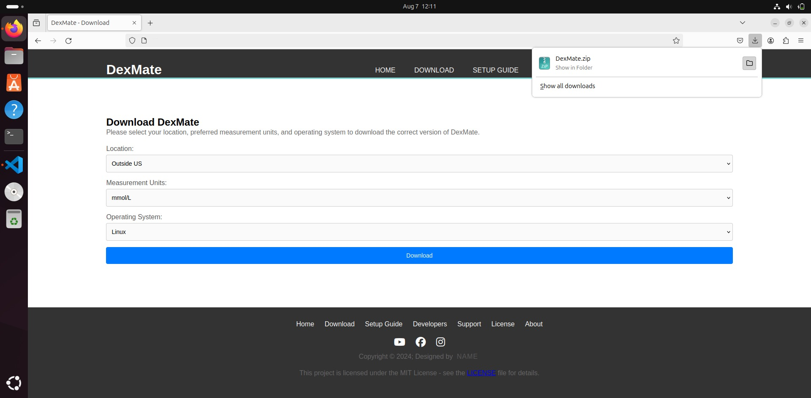
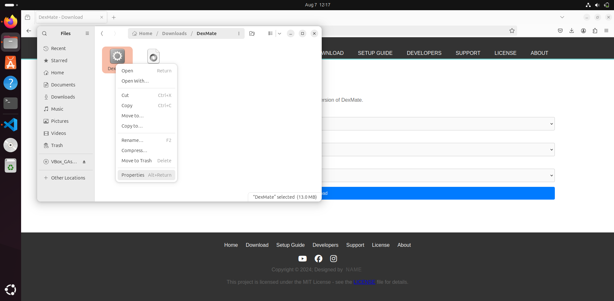

Setup Guide for DexMate
Follow these simple steps to get DexMate up and running on your device.
Setup Guide for Windows
Step 1: Download the installation file
Select your location, measurement units, and operating system from the download page and download the appropriate installation file for your device.
 - (2).jpg)
Step 2: Run installation file
Once the download is complete, open the file explorer and go to the directory where you downloaded installation file. Then double-click on it. It's possible that you will get this blue windows sating "Windows protected your PC". In this situation just click more info and than run anyway. Now go through installation setup (folow the onscreen instructions).
.png)
.png)
.png)
.png)
Step 3: Run the app
When the installation has finished the app has opened automatically. If not, just open it like any other app. Now you need to put your dexcom credentials in and hit log in button. Now you can enjoy easier life with glucose on your machine!
.png)
*Optional Step: Run on Startup
If you want DexMate to run automatically when you log in to your PC, follow these steps:
Click the Windows key + R and type “shell:startup”. It will open a folder. Now you should copy the DexMate shortcut from your desktop or wherever you have saved it to this folder. Now the app will start automatically when you log in to your PC.
Setup Guide for MacOS
Step 1: Download the zip
Select your location, measurement units, and operating system from the download page and download the appropriate zip for your device.
Step 2: Unzip the folder
Once the download is complete, open Finder and go to the directory where you downloaded the zip. Then, double-click on it to extract the contents. You should see the DexMate.app file along with the license.
Step 3: Run the app
After unzipping the folder, locate DexMate.app. Drag and drop the DexMate.app file into your Applications folder for easy access.
Step 4: Launch the App
To run DexMate, open the Applications folder, find DexMate.app, and double-click to launch it. If you receive a warning about the app being from an "unidentified developer," follow these steps:
- Right-click (or Control-click) on the
DexMate.appfile. - Select Open from the context menu.
- When the warning message appears, click Open again to confirm.
Once you confirm, the app will launch normally, and you won't see the warning again for future use.
Now you can enjoy the app!
Setup Guide for Linux
Step 1: Download the zip
Select your location, measurement units, and operating system from the download page and download the appropriate zip for your device.
Step 2: Unzip the folder
Once the download is complete, open your file manager and go to the directory where you downloaded the zip. Then right-click on it and select "Extract Here".
Step 3: Run the app
After unzipping the folder, open the DexMate unzipped folder and locate the DexMate.exe file. Right-click on it and select "Create shortcut" and then move this shortcut to your desktop or anywhere you want to have this application. Now you can run the application from this shortcut and modify settings as needed. It is possible that it will take you to "windows protected your PC" because this app is not officially registered in microsoft. Just click "More info" and then click on "Run anyway" button. Now it should run normally.
*Optional Step: Run on Startup
If you want DexMate to run automatically when you log in to your PC, follow these steps:
Open terminal and run this command: sudo apt install gnome-startup-applications
Then find the startup application preferences app and open it.
Then click the “Add” button, give it a name you want, and in the command section, paste the path to DexMate (for example, /username/Downloads/DexMate) or paste this command: sudo ./DexMate. You can now add an additional comment if you want and click “Add”.
Now you can close the application. The app should run automatically when started and logged in to the PC.